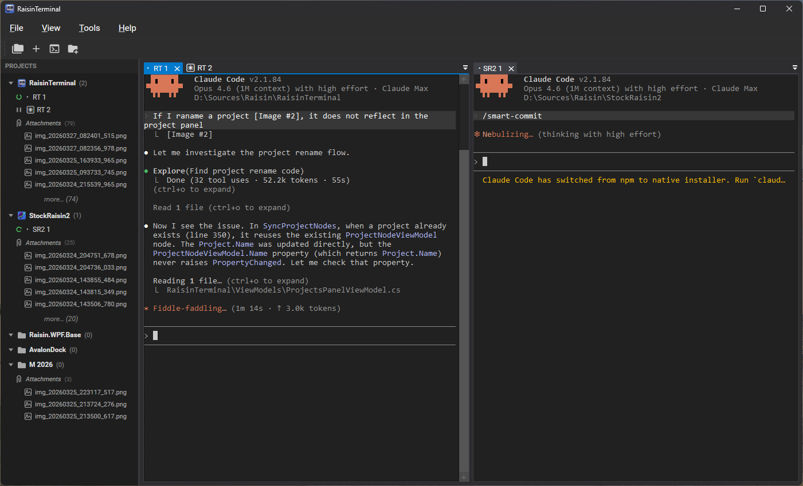

Windows terminal emulator with multi-pane layout, session persistence, and first-class Claude Code session management.

AvalonDock-powered docking with drag-and-drop tabs. Split, stack, and float terminal panes however you like.
ConPTY-based with VT100/ANSI support, alternate screen buffer, 10K-line scrollback, and Unicode block drawing.
Detects session status (idle, working, waiting for input), manages session names, and tracks per-project state automatically.
Groups terminal sessions by working directory. Attach images and files per project with drag-and-drop support.
Saves and restores working directory, last command, and alternate screen state across restarts. Pick up where you left off.
Ctrl+F to find text in scrollback with highlight navigation. Cross-session command history with search.
WPF app built on .NET 8 with a clean separation between UI and terminal engine.
Clone and build:
git clone https://github.com/gerleim/RaisinTerminal.git
cd RaisinTerminal
dotnet build RaisinTerminal.slnx
Run:
dotnet run --project RaisinTerminal/RaisinTerminal.csproj
Or build standalone (NuGet packages, no sibling repos needed):
dotnet build RaisinTerminal.slnx -p:UseProjectReferences=false
Requirements: Windows 10 version 1809+ · .NET 8 Runtime